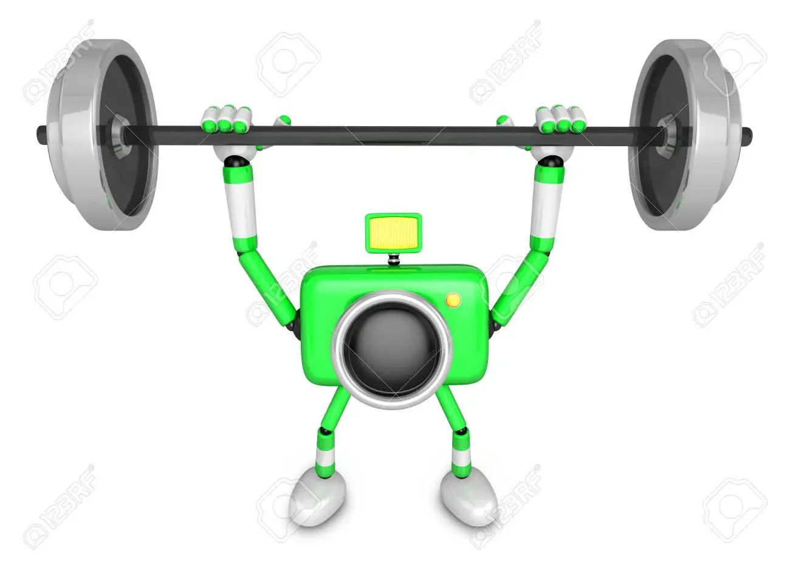
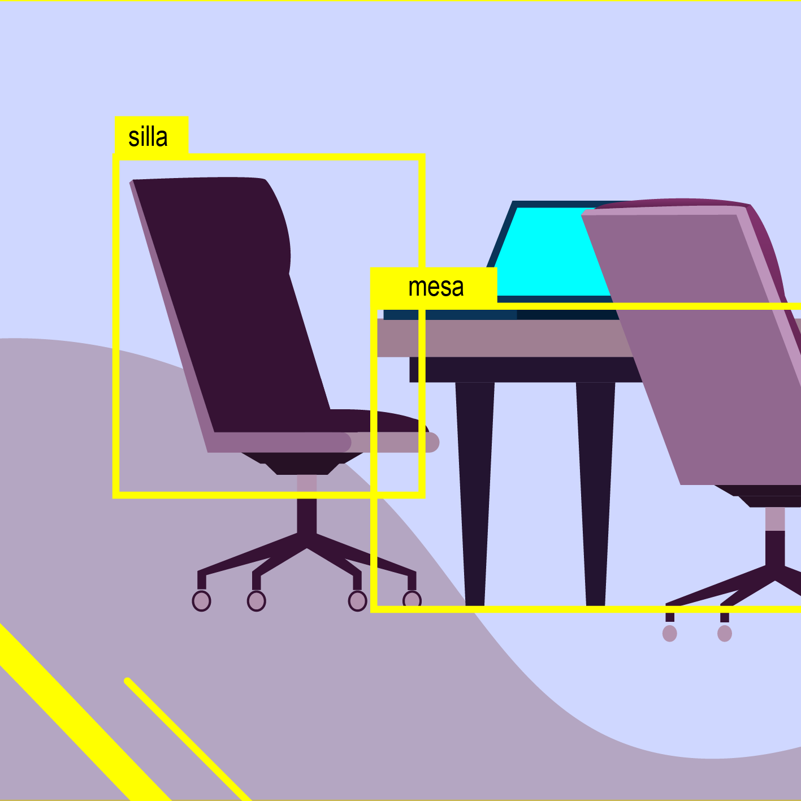
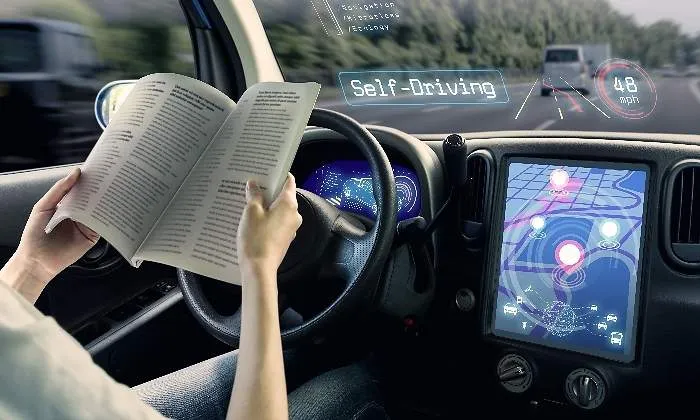

¡Ojo al dato! Cómo enseñamos a las máquinas a ver
¿Alguna vez te has maravillado de cómo tu teléfono reconoce tu cara cada vez que lo desbloqueas? Esto se ha conseguido gracias al uso de modelos de reconocimiento de objetos ¿Pero cómo se obtienen esos modelos? ¿Qué aplicaciones podemos darle a esta tecnología? ¡Adentrémonos, pues, al mundo de la visión computacional!
Alimentando la vista
Para que una máquina pueda empezar a reconocer objetos, primero necesitamos "alimentarla" con una buena cantidad de ejemplos. Imagínate enseñándole a un niño pequeño a distinguir un perro de un gato. Seguramente, le mostrarías varias fotos de ambos, ¿cierto? A las máquinas les sucede lo mismo.
Este proceso de "alimentar" a la máquina con ejemplos se llama "preparación de datos". Pero, ¡eh! No todo vale. Necesitamos seguir algunas reglas. Por ejemplo, debemos procurar que las fotos sean variadas. No queremos confundir a nuestra máquina mostrándole únicamente perros poodle y luego esperar que reconozca a un bulldog. Asimismo, es importante tener un buen equilibrio en el número de ejemplos de cada objeto. Si le mostramos 1000 imágenes de gatos y solo 10 de perros, la máquina podría tender a pensar que casi todo lo que ve es un gato.
Además, el tamaño de nuestro conjunto de datos, o "dataset", es muy importante. No es lo mismo enseñarle a nuestra máquina con 50 imágenes que con 5000. Cuantos más ejemplos tenga, más fácil le será aprender a distinguir objetos correctamente.
Hora de hacer ejercicio ¿Estamos en forma o en sobreajuste?
Una vez que nuestra máquina ya tiene los datos preparados, ¡es hora de que se ponga en forma! Este "ejercicio" es un proceso que llamamos "entrenamiento".
Existen diferentes métodos para entrenar a una máquina en el reconocimiento de objetos. Algunos se basan en la identificación de formas y colores, otros en la búsqueda de patrones... ¡Es como entrenar para diferentes deportes!
Pero hay que ir con cuidado, ya que a veces podemos excedernos en el entrenamiento y caer en lo que se conoce como "sobreajuste". Esto sucede cuando la máquina se vuelve muy buena identificando las imágenes que ya ha visto durante el entrenamiento, pero falla al intentar reconocer nuevas imágenes. Es como si un jugador de voleibol se especializara tanto en saques que se olvidase de cómo hacer un toque de dedos.
Después de todo ese duro entrenamiento, ¿cómo sabemos si nuestra máquina está lista para el gran show? ¡Necesitamos una prueba de fuego! Y esta viene en forma de "testeo".
En esta fase, le mostramos a la máquina nuevas imágenes que nunca antes ha visto y le preguntamos: "¿Qué ves aquí?" Si todo ha ido bien con el entrenamiento, debería ser capaz de identificar correctamente los objetos.
¡El mundo en tus ojos!
Puede que te estés preguntando: "¿Y todo este trabajo para qué?" Pues resulta que el reconocimiento de objetos tiene montones de aplicaciones en nuestra vida cotidiana. ¿Te acuerdas de tu teléfono reconociendo tu cara? Eso es solo la punta del iceberg.
Los coches autónomos, por ejemplo, necesitan ser capaces de reconocer señales de tráfico, a otros vehículos, a los peatones... ¡todo gracias al reconocimiento de objetos!
O piensa en la seguridad: las cámaras de vigilancia pueden usar esta tecnología para identificar si alguien sospechoso está merodeando por la zona. ¡Incluso las redes sociales usan el reconocimiento de objetos para sugerirte que etiquetes a tus amigos en las fotos!
Y, sin duda, uno de los usos más emocionantes es ayudar a las personas con discapacidades visuales a "ver" su entorno. Imagina una aplicación que, usando la cámara del teléfono, pueda describir a una persona ciega lo que está sucediendo a su alrededor. Increíble, ¿no?
En resumen, enseñar a las máquinas a "ver" es un viaje lleno de emoción, esfuerzo y descubrimientos increíbles. Y aunque hay mucho trabajo detrás de esta mágica capacidad, los beneficios son inmensos. Así que, la próxima vez que tu teléfono reconozca tu rostro, ¡recuerda toda la aventura que hay detrás!
Y tú, ¿cómo crees que cambiará nuestro mundo cuando las máquinas sean aún mejores "viendo"?